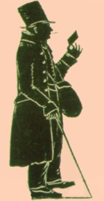

|
by Stefan Bielinski William Bancker Winne was born in 1769, the son of Albany tanner Daniel K. Winne and his second wife, Schenectady native Jannetje Bancker. By that time, his father had secured some tanning lots along Foxes Creek. Over the next two decades, Willie Winne and his brothers would learn the process that transformed animal skins into leather. By the 1790s, the young man began to purchase lots on the North Side of Foxes Creek. At that time he probably lived with his brother Killian D. Winne on the outskirts of Albany's second ward. By 1800, he was established in his own second ward household and was the owner of several lots near the then northern boundary of Albany. By 1804, he was identified as a cordwainer and was a member of the Albany Mechanics Society. From his home at 57 Orange Street, Willie
Winne expanded his activities in a transition away from leather work.
He became a letter carrier - the "three penny post" who would deliver
mail anywhere in the city for 3 cents. According to his obituary,
he served in that capacity for 48 years. That occupation made him
an everyday fixture on Albany streets. In connection with the robbery of the home of John Pye and other exploits, Winne was among the more colorful and legendary characters of early nineteenth century Albany. In August 1831, the "penny postman" had a seat amid the dignitaries in the first car on the first train ride between Albany and Schenectady. By 1816, he also was the "front door-keeper" at the Albany Theater and was toasted in the newspaper for "his long and meritorious services - having punctually fulfilled the duties of his station through wind and rain, fair weather and foul." At the same time, he maintained a connection to leathermaking and held a municipal post with the title "Inspector of Leather." William B. Winne continued to buy and sell real estate in the Arbor Hill section of the city through the remainder of his life. As the years passed, he watched the Foxes Creek ravine change from a marginal area dotted with tanning pits to a working-class, residential neighborhood. His wife, Rebecca, died in 1845. Willie Winne then was left alone in the wooden house on Orange Street four doors up from Chapel until his death at age 90 in January 1848.notes "The Three-Penny Post." Variations of this silhouette image of William B. Winne (1769-1848) were printed widely during the late nineteenth and early twentieth centuries. Copy in the Graphics Archive of the Colonial Albany Social History Project. first posted: 7/20/00; last revised 5/1/12 |
{kind=link}